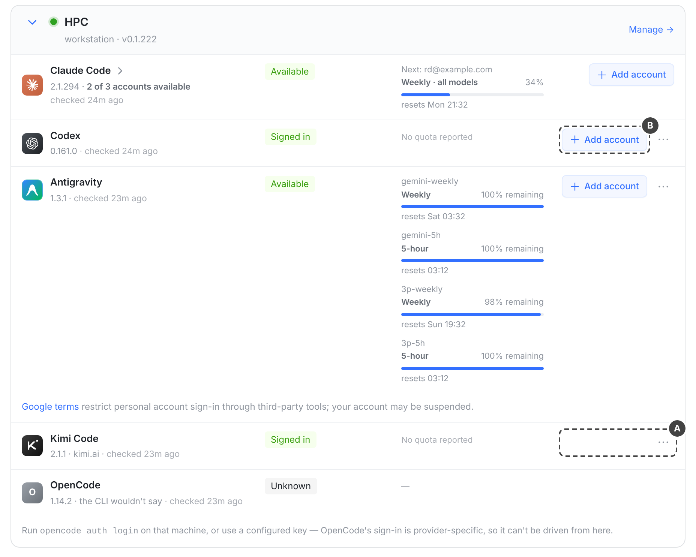
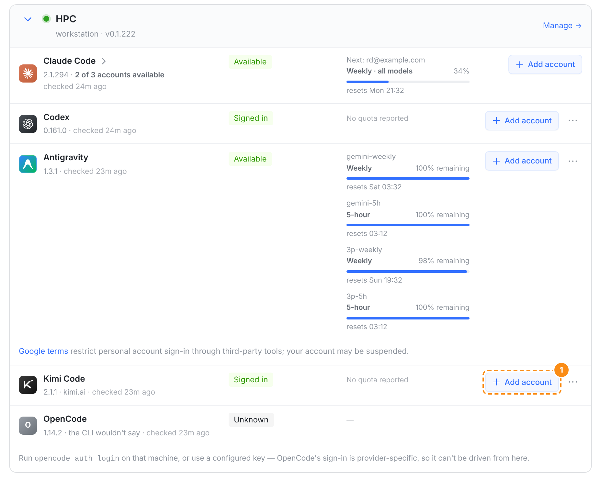
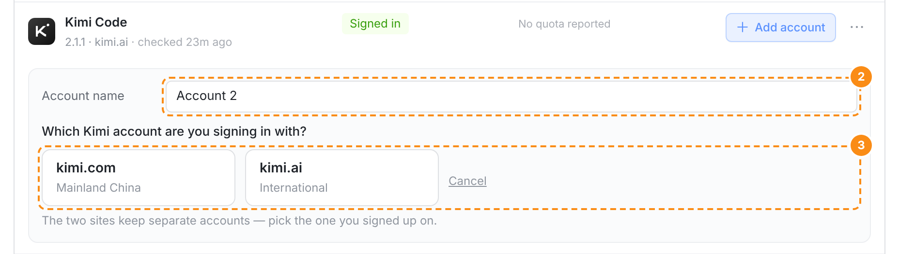
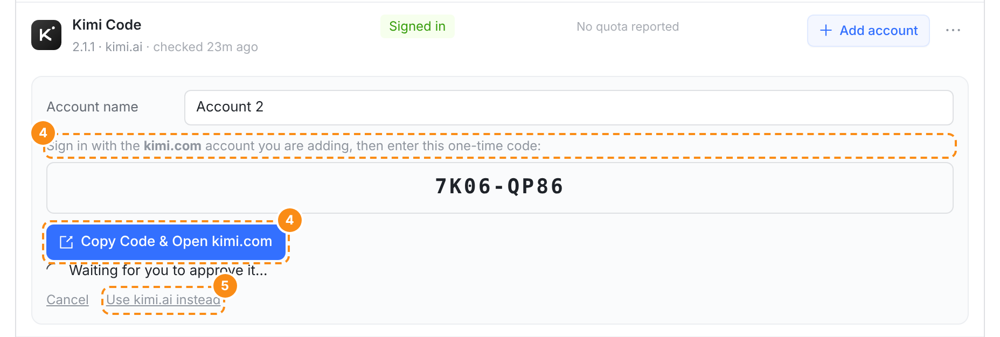
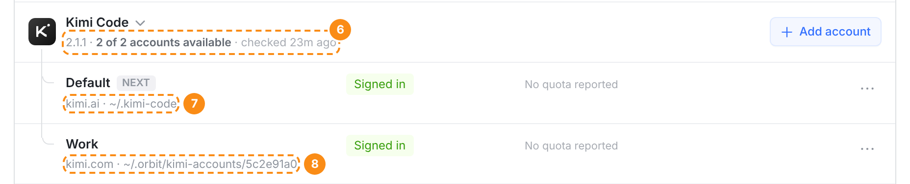
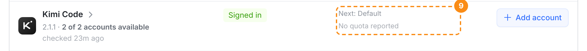
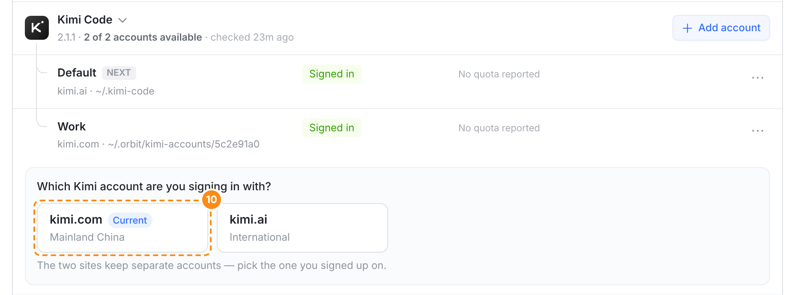
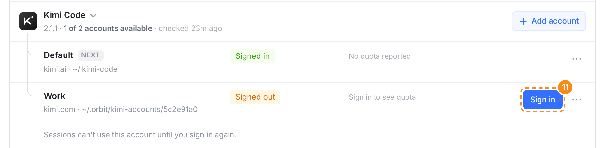
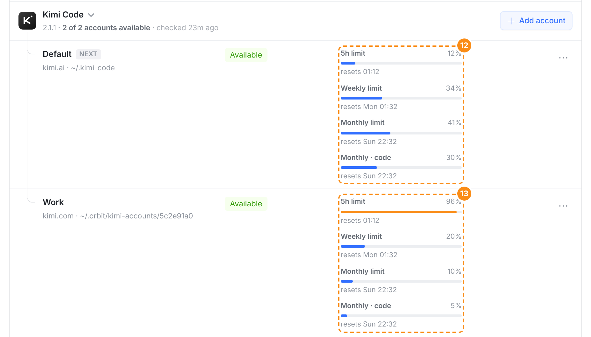
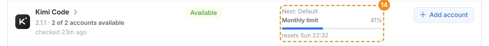

Kimi Code 多账号 · web Providers 页：真实控制台逐帧对照 01-web.png
左边是设计图（docs/mocks/kimi-accounts/01-web.png 的八帧，原型截图），右边是同一帧在本分支真实 web 控制台上的截图：vite dev 跑 src/web，接口是同一份造的数据（Claude 账号换成示例地址），同样 1440 px 宽、2 倍、同样的裁切和标记。时间相关的字（checked … ago、resets …）随截图时刻不同。最后两帧是设计图还没有的 Kimi 额度。
kimi-account-login/v1）：Kimi 行没有「+ Add account」

A 只有 ⋯；B Codex 照旧有 Add account。设计图左边是「现在」的 web；真实这边是新 web 遇到旧 runner，样子一样。
kimi-account-login/v1 的 runner：一个账号时也有「+ Add account」

① 位置、样式同 Codex / Antigravity；副标题照旧 2.1.1 · kimi.ai。


② 名字 Account 2；③ 不自动开始，点站点才登录（名字为空时两个站点都按不动）。


④「Sign in with the kimi.com account you are adding」；⑤ 一键换到 kimi.ai，同一个名字重新开始。


⑥ 2 of 2 accounts available，头上不写站点；⑦⑧ 每行「站点 · 目录」。


⑨ 收起时头上写下一个会话用的账号；没有额度读数时 No quota reported。


⑩ Work 的 Re-sign in：Current 是 Work 自己的 kimi.com。


⑪ 掉线只影响 Work：它自己的 Sign in，头上 1 of 2 accounts available。

⑫ Default 的四个窗口：5h limit、Weekly limit、Monthly limit、Monthly · code（Kimi 自己 /usage 面板的叫法，code 是月度里编程的那一份）。⑬ Work 的 5 小时窗口快用完，进度条变色，NEXT 落在 Default。

⑭ 收起时头上写 Next: Default 和它最接近上限的窗口（这里是月度 41%），规则同 Claude Code 的分组。